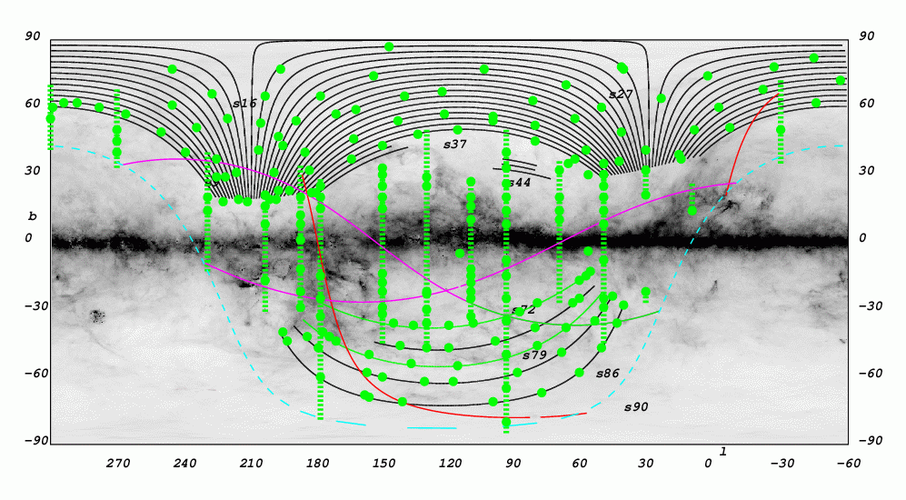

SEGUE imaging sky coverage and plate layout
July 15, 2008 (Complete)

Shown in the figure above is the SEGUE sky coverage in Galactic coordinates (l,b).
SEGUE:
- Blue circles: individual 3 degree diameter positions of Galactic
structure plate pairs.
Each plate pair consists of one bright plate (one hour exposure) and one faint plate (two hour exposure), for a total of 185 plate pairs. - Yellow circles: Plates targeting specific structures such as known open clusters, the Sagittarius dwarf stream, or the Monoceros Ring, for a total of approximately 15 plate pairs.
- Green lines: completed imaging
- Green dots: completed spectroscopic observations
- Magenta lines: new SEGUE scans to be obtained
of the possible path of Monoceros dwarf tidal stream.
(node, incl) = (259.9, 43.2), (325.1, 50.81). The two lines cross at the location of M31. - Dashed cyan (light blue) line indicates limit of SEGUE imaging (declination > -20 degrees)
- The darkened, dusty background is the SFD* reddening map [E(B-V) at each position] with center shifted to (l,b) = (120,0).
- Black lines: completed SDSS imaging
- Red Line: path of Sagittarius Dwarf (node, incl) = (32, 35).